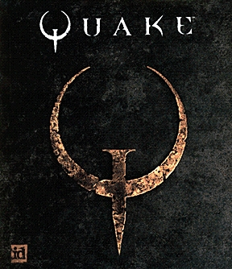

John Carmack
Is the G.O.A.T. Software Engineer.

He co-founded id Software in 1991 and produced multiple classics such as Commander Keen and Wolfenstein 3D which influenced future titles across the video game industry. They progressed the 3D technology and released Doom
One of their most notable creations being Quake and the engine it runs on, the first truly three dimensional game. The Quake engine still holds massive influence today with notable titles such as Half Life and Call of Duty being derived from some variant of the it.